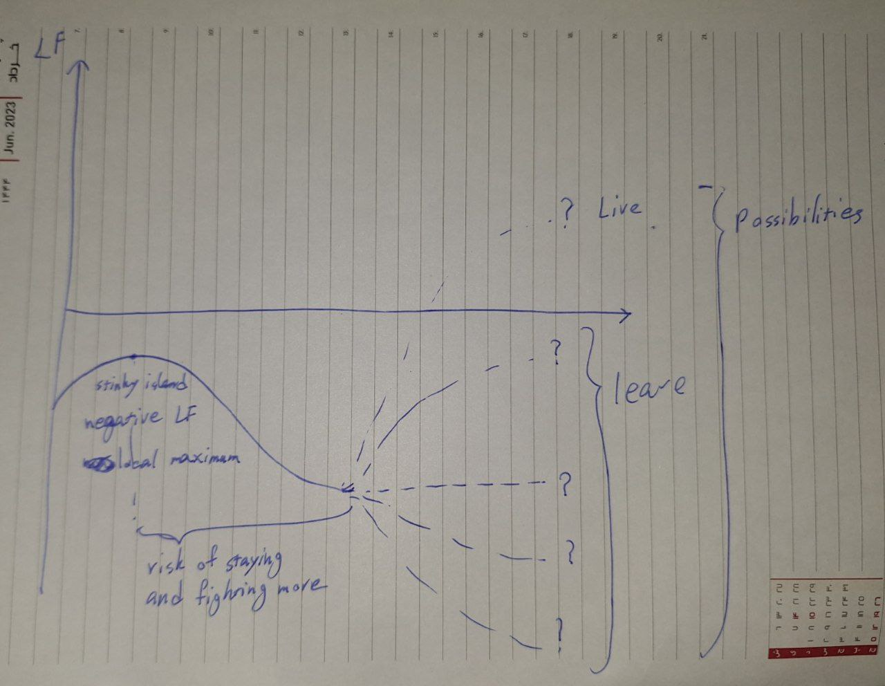

Life Factor
LF = Integral of (Pleasure - Pain) throughout life.
If positive, it’s a worthwhile life called living and it’s worth to be repeated again.
If negetave, it’s a wasted life called only being alive and would have been better to leave in the first place and it would have been better to not be born at all.
I no longer believe in Mind opiums like God or Ideals like Spider-man. I simply see LF as the ultimate metric for measuring life, so I decide maximizing the LF as ultimate goal of my life.
If it’s in the negative side and monotonic decreasing then maximizing LF means to leave this world.
If it’s in the positive side and monotonic increasing then maximizing LF means to live as much as more years as possible.
But deciding is not never this easy. There is always randomness, uncertainty, probabilities, chance, doubt, actions, time, depression, pain, and shitload of other factors thatn make the computation as hard as an infinite degree infinite order mathematical equation which is impossible to solve absolutely and is only possible to be estimated with concepts like numerical analysis.
C’est la vie
Leave or fight for narrow possibility to live.
Instead of complaining, shouting and crying C’est la vie has an acceptence inside it.
Live
What does it mean to live?
Mathematically it means to have positive life factor.
In other terms it means to be healthy, wealthy, free and have time to choose whatever I whim and most importantly be able to enjoy them:
- sleep, rest, niksen and do nothing
- lie down on grass
- partner to love, be loved and sex
- Be my true self
- watch movies and series
- Listen to music
- Walk under rain
- pool
- spend time with family and friends
- workout
- eat
- drink
- play
- work in intriguing fields
- travel around the world
- Learn languages
- dance
Of course the perfect life almost never has been possible but I want good enough level of it.
Leave
What does it mean to leave?
To end all of these struggles.
To say no to this proposed life.
Negative local maximum - island analogy

I’m on a small stinky island with limited resources only enough to stay alive. As far as my eyes can see there is just ocean. I have mainly 3 options:- to end my life and refuse it
- to struggle to survive and stay alive in this shitty island
- to start swimming with maximum power to reach maybe a bigger island to be able to live
Let’s make it even more dramatic and add the concept of urgency and limited time window: There are lots of sharks in this ocean and for some fucking reason I have a very limited time right now to choose to stay or dive, otherwise I’ll be stuck forever or for a fucking long time.
The island is a local maximum but it’s still is under zero bar of LF. So the risk I can take is to leave this local maximum and make it even more negative for the possibility of a positive LF. Higher fight, pain and LF falldown means more risk and also sooner results.
If I’m gonna lose some to get another if can be in different degrees:
- rest 1 day per week
- rest 1 or 2 hours per day
- half rest half work
- … But I think I’m gonna go for 0 rest. I have 0 interest to be only alive and since where I am right now is only being alive let’s fuck it. I’m pay 100% and become nothing to get everything. this gamble either falls and I die in the most negative and absolute minimum point of LF or it wins and get sth positive.
The problem is that I have some positive LF moments but all of them altoghether are near zero. Even in the best case when I am totally free I’m mostly experiencing zero level LF. So basiacally my life is divided to moments with pain, depression, sadness, anger, fight, … which are negative LF (70% of my life), moments with no feeling and emptiness which are in the best case zero LF (25% of my life) and moments with pleasure, joy and happiness which are positive LF (at most 5% of my life)
So if I’m gonna put it in the island anology it’s like I have 2 options:
- to die
- to fight and endure pain for some better island that might not exist at all, if exists is far far away, and even if I reach it might turn out to be another unwanted useless property for me